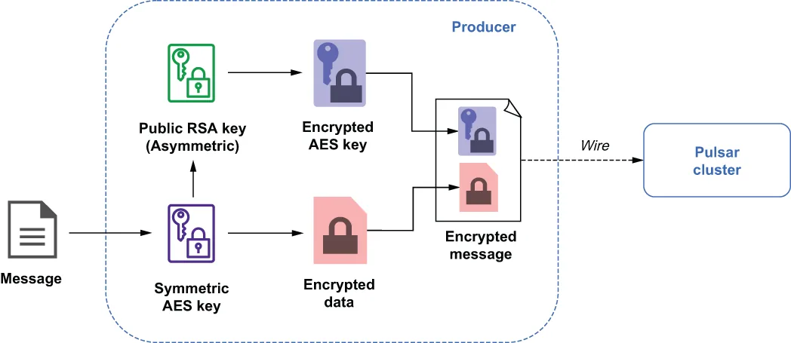
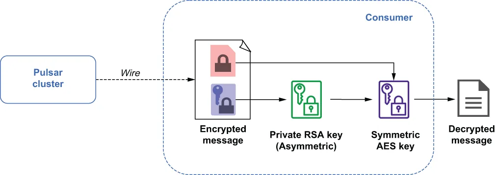

The new orders topic will contain sensitive credit card information that must not be accessible to any consumer other than the payment verification service. Even though we have configured TLS wire encryption to secure the information during transit into the Pulsar cluster, we also need to ensure that the data is stored in an encrypted format. Fortunately, Pulsar provides methods that allow you to encrypt messages’ contents on the producer side before sending them to the broker. These message contents will remain encrypted until a consumer with the correct private key consumes them.
新的订单主题会包含敏感的信用卡信息，这些信息绝不能被支付校验服务以外的任何消费者访问到。尽管我们已经配置了 TLS 链路加密来保护信息在传入 Pulsar 集群途中的安全，我们还需要确保这些数据是以加密格式存储的。所幸 Pulsar 提供了相应的手段，让你可以在生产者端、在把消息发给 broker 之前就对消息内容进行加密。这些消息内容会一直保持加密状态，直到某个持有正确私钥的消费者把它们消费出来。
In order to send and receive encrypted messages, you will first need to create an asymmetric key pair. A script named gen-rsa-key.sh is included in the Docker image we have been using, which can be used to generate a public/private key pair. The following listing shows the contents of the script, which is located in the /pulsar/manning/ security/message-encryption folder.
要收发加密消息，你首先需要创建一个非对称密钥对。我们一直在用的这个 Docker 镜像中包含了一个名为 gen-rsa-key.sh 的脚本，可用它来生成公钥/私钥对。下面清单展示了该脚本的内容，它位于 /pulsar/manning/security/message-encryption 目录下。
Listing 6.25 Contents of gen-rsa-keys.sh
# Generate the private key
openssl ecparam -name secp521r1 \
-genkey \
-param_enc explicit \
-out /pulsar/manning/security/encryption/ecdsa_privkey.pem
# Generate the public key
openssl ec -pubout \
-outform pem \
-in /pulsar/manning/security/encryption/ecdsa_privkey.pem \
-out /pulsar/manning/security/encryption/ecdsa_pubkey.pem
You should give the public key to the producer application, which, in this particular case, is the client mobile application. The private key should only be shared with the payment verification service, since it will need to consume the encrypted messages that are published to the persistent://microservices/orders/new topic. The following listing shows sample code of how to use the public key with a message producer to encrypt the data before it is sent.
你应当把公钥交给生产者应用程序，在本例中也就是客户端移动应用。私钥则只应分享给支付校验服务，因为它需要消费那些发布到 persistent://microservices/orders/new 主题的加密消息。下面清单展示了示例代码，说明如何在消息生产者一侧使用公钥，于数据发送之前对其进行加密。
Listing 6.26 Encrypted producer configuration
String pubKeyFile = "path to ecdsa_pubkey.pem"; ❶
CryptoKeyReader cryptoReader
= new RawFileKeyReader(pubKeyFile, null); ❷
Producer<String> producer = client
.newProducer(Schema.STRING)
.cryptoKeyReader(cryptoReader) ❸
.cryptoFailureAction(ProducerCryptoFailureAction.FAIL) ❹
.addEncryptionKey("new-order-key") ❺
.topic("persistent://microservices/orders/new")
.create();
❶ The client must have access to the public key.
❶ 客户端必须能够访问该公钥。
❷ Initialize the crypto reader to use the public key.
❷ 初始化加密读取器，使其使用该公钥。
❸ Configure the producer to use the public key to encrypt the messages via the CryptoReader.
❸ 配置生产者，通过 CryptoReader 使用该公钥来加密消息。
❹ Tells the producer to throw an exception if the message cannot be encrypted
❹ 告知生产者在消息无法加密时抛出异常。
❺ Provides a name for the encryption key
❺ 为该加密密钥提供一个名称。
The following listing shows sample code of how to configure the consumer inside the payment verification service to use the private key to decrypt the messages it consumes from the persistent://microservices/orders/new topic.
下面清单展示了示例代码，说明如何配置支付校验服务内部的消费者，使其使用私钥来解密从 persistent://microservices/orders/new 主题消费到的消息。
Listing 6.27 Configuring a Pulsar client to read from an encrypted topic
String privKeyFile = "path to ecdsa_privkey.pem"; ❶
CryptoKeyReader cryptoReader
= new RawFileKeyReader(null, privKeyFile); ❷
ConsumerBuilder<String> builder = client
.newConsumer(Schema.STRING)
.consumerName("payment-verification-service")
.cryptoKeyReader(cryptoReader) ❸
.cryptoFailureAction(ConsumerCryptoFailureAction.DISCARD) ❹
.topic("persistent://microservices/orders/new")
.subscriptionName("my-sub");
❶ The client must have access to the public key.
❶ 客户端必须能够访问该公钥。
❷ Initialize the crypto reader to use the public key.
❷ 初始化加密读取器，使其使用该公钥。
❸ Configure the consumer to use the private key to decrypt the messages via the CryptoReader.
❸ 配置消费者，通过 CryptoReader 使用该私钥来解密消息。
❹ Tells the consumer to discard the message if it cannot be decrypted
❹ 告知消费者在消息无法解密时丢弃该消息。
Now that I’ve covered the steps required to configure the message producers and consumers to support message encryption, I want to drill down into the details of how it is implemented internally within Pulsar and some of the key design decisions you should be aware of to better understand how to leverage it in your applications. Figure 6.6 shows the steps taken on the producer side when message encryption is enabled. When the producers’ send method is called with the raw message bytes, the producer first makes an internal call to the Pulsar client library to get the current symmetric AES encryption key. The encryption key is considered current because these keys are automatically rotated every four hours to limit the impact of someone gaining unauthorized access to the key, limiting the data exposed to a four-hour window in the event of a compromised key, rather than the entire history of the topic.
至此我已经讲完了配置消息生产者和消费者以支持消息加密所需的步骤，接下来我想深入讲讲它在 Pulsar 内部是如何实现的，以及你应当留意的几个关键设计决策——了解这些有助于你更好地在自己的应用中运用它。图 6.6 展示了启用消息加密时生产者一侧所执行的步骤。当生产者的 send 方法带着原始消息字节被调用时，生产者会先在内部调用一次 Pulsar 客户端库，去获取当前正在使用的对称 AES 加密密钥。之所以称其为“当前”，是因为这些密钥每四小时就会自动轮换一次，以此来限制密钥被未授权者拿到后所造成的影响——万一密钥泄露，暴露的数据就被限制在一个四小时的时间窗内，而不是该主题的整个历史数据。

Figure 6.6 Message encryption on the Pulsar producer
图 6.6 Pulsar 生产者一侧的消息加密
The current AES key is then used to encrypt the raw message bytes of the message, which are then placed in the outbound message’s payload. Next, the public key of the RSA asymmetric key pair we generated earlier is used to encrypt the AES key itself, and the resulting encrypted AES key is placed in the outbound message’s header properties.
随后，这个当前 AES 密钥被用来加密消息的原始字节，加密后的内容则被放进出站消息的载荷（payload）中。接着，用我们之前生成的那个 RSA 非对称密钥对中的公钥来加密这个 AES 密钥本身，得到的已加密 AES 密钥则被放进出站消息的头部属性里。
By encrypting the AES Key with the public key of an asymmetric key pair, we can rest assured that only a consumer with the corresponding private key of the key pair can decrypt (and thus read) the AES key that was used to encrypt the message payload. At this point, all of the data within the outbound message is encrypted: the message payload with the AES key and the message header that contains the AES key, which itself has been encrypted with a public RSA key. The message is then sent over the wire to the Pulsar cluster for delivery to its intended consumers.
由于我们用非对称密钥对中的公钥加密了 AES 密钥，就可以放心：只有持有该密钥对中对应私钥的消费者才能解密（进而读取）那个用于加密消息载荷的 AES 密钥。到这里，出站消息内的所有数据都处于加密状态了：消息载荷由 AES 密钥加密，而消息头部中存放的那个 AES 密钥本身，又是用一个公开的 RSA 密钥加密过的。随后，这条消息就被发送到网络上，传往 Pulsar 集群，以便投递给它的目标消费者。
Upon receipt of an encrypted message, a consumer performs the steps shown in figure 6.7 to decrypt the message and access the raw data. First, the consumer reads the message headers and looks for the encryption key property, which contains the encrypted AES key. It then uses the private RSA key from the asymmetric key pair to decrypt the contents of the encryption key property to produce the AES key. Now that the consumer is in possession of the AES key, it can decrypt the message contents with it due to the fact that it is a symmetrical key, meaning it is used to both encrypt and decrypt data.
消费者收到一条加密消息后，会执行图 6.7 中所示的步骤来解密消息、获取原始数据。首先，消费者读取消息头部，寻找加密密钥属性，该属性中存放着已加密的 AES 密钥。接着，它使用非对称密钥对中的 RSA 私钥来解密该加密密钥属性的内容，从而还原出 AES 密钥。既然消费者已经拿到了 AES 密钥，它就可以用它来解密消息内容了——因为这是一个对称密钥，也就是说它既用于加密数据，也用于解密数据。

Figure 6.7 Message decryption on the Pulsar consumer
图 6.7 Pulsar 消费者一侧的消息解密
Choosing to store the AES key used to encrypt the message with the encrypted message contents themselves alleviates Pulsar from the responsibility of having to store and manage these encryption keys internally. However, if you lose or delete the RSA private key used to decrypt the RSA key, your message is irretrievably lost and cannot be decrypted by Pulsar. Therefore, it is a best practice to store and manage the RSA key pairs in a third-party key management service, such as AWS KMS.
把用于加密消息的 AES 密钥与已加密的消息内容存放在一起，就免去了 Pulsar 在内部存储和管理这些加密密钥的责任。但是，如果你丢失或删除了用于解密该 RSA 密钥的 RSA 私钥，你的消息就无法挽回地丢失了，Pulsar 也无法将其解密。因此，最佳实践是把这些 RSA 密钥对存放并管理在第三方密钥管理服务中，例如 AWS KMS。
Now that I have brought up the possibility of a lost RSA key, you might be wondering what exactly happens in such a scenario. Obviously, you never want this to occur, but it can happen, so you need to consider how you want your application to respond and what options you have on both the producer and consumer side.
既然我已经提出了 RSA 密钥可能丢失这一可能性，你或许会想知道在那样的场景下究竟会发生什么。显然，你绝不愿意这种事发生，但它确实可能发生，所以你需要考虑好自己的应用该如何应对，以及在生产者一侧和消费者一侧分别有哪些选择。
First, let’s consider the producer side. There are really only two options here. First, you can choose to continue sending the messages without encrypting them. This might be a good option if the value of the data exceeds the risk of having it stored in an unencrypted format for a limited amount of time. For instance, in the order placement scenario we discussed earlier, it would be better to allow the customer orders to be sent rather than to shut down the entire business due to a missing RSA key. Since the data is being sent over a secure TLS connection, the risk is minimal.
我们先看生产者一侧。这里其实只有两个选项。第一，你可以选择不加加密、继续发送消息。如果数据的价值超过了让它在有限时间内以未加密格式存储所带来的风险，那么这可能是一个不错的选择。举例来说，在我们前面讨论过的下单场景里，让客户订单照常发出去，显然好过因为一个 RSA 密钥缺失就停掉整盘生意。由于数据是通过安全的 TLS 连接发送的，风险被降到了最低。
The other option is for the producer to fail the messages and throw an exception, which is a good option when risk of the exposing the data outweighs the potential business value of having it delivered in a timely manner. This would typically be some sort of non-customer-facing application, such as a backend payment processing system, that does not have a strict business SLA. You can specify which action you want your producer to take by using the setCryptoFailureAction() method in the producer configuration, as was shown in listing 6.26.
另一个选项是让生产者判定消息发送失败并抛出异常。当暴露数据的风险超过了让数据及时送达所带来的潜在业务价值时，这是一个好选择。这通常适用于某类不直接面向客户的应用，例如后端支付处理系统，它们并没有严格的业务 SLA。你可以在生产者配置中用 setCryptoFailureAction() 方法来指定希望生产者采取哪种动作，正如清单 6.26 中所展示的。
If consumption fails due to decryption failure on the consumer side, then you have three options; first, you can elect to deliver the encrypted contents to the consuming application. However, it will then be the consuming application’s responsibility to decrypt the message. This option is useful when your consumer’s logic is not based on the message contents, such as routing of the message to downstream consumers based on the information in the message headers.
如果在消费者一侧因解密失败而导致消费失败，那么你有三个选项。第一，你可以选择把加密后的内容直接投递给消费方应用程序。不过这样一来，解密消息的责任就落到了该应用程序头上。当你的消费者逻辑并不基于消息内容时，这个选项会很有用——比如根据消息头部中的信息把消息路由给下游消费者这类场景。
The second option is to fail the message, which will make the Pulsar broker redeliver it. This option is useful if you are a shared subscription type, so there are multiple consumers on the same subscription. When you fail the message, you are hoping the decryption issue is isolated to just the current consumer, such as a missing private key on that consumer’s host machine, and if the message is redelivered to another consumer, it will be able to decrypt the message and consume it successfully. Do not use this option with an exclusive subscription type, as this will result in the message being redelivered indefinitely to the same consumer, who cannot process it.
第二个选项是判定该消息失败，这会让 Pulsar broker 重新投递它。如果你使用的是 shared（共享）订阅类型，即同一个订阅上有多个消费者，那么这个选项会很有用。当你判定消息失败时，你是在赌这个解密问题只局限于当前这一个消费者——例如该消费者所在主机上缺失了私钥——而如果消息被重新投递给另一个消费者，它就能成功解密并消费这条消息。不要在 exclusive（独占）订阅类型下使用这个选项，因为这会导致消息被无限次地重新投递给同一个消费者，而它始终无法处理该消息。
The last option is to have the consumer discard the message, which is useful for an exclusive subscription consumer that needs access to the message contents in order to perform its logic. As we discussed earlier, failing the message will result in an infinite number of message redelivers, and the consumer will be stuck reprocessing the message. Such a scenario would halt message consumption on the subscription and steadily increase in the message backlog for the entire topic. Therefore, discarding the message is the only way to prevent this from occurring, but at the cost of message loss.
最后一个选项是让消费者丢弃该消息，这对于一个需要访问消息内容才能执行自身逻辑的独占订阅消费者来说很有用。正如我们前面所讨论的，判定消息失败会导致消息被无限次重新投递，消费者就会卡在反复处理同一条消息上。这样的情形会让该订阅上的消息消费陷入停滞，并使整个主题的消息积压量持续攀升。因此，丢弃消息是防止这种情况发生的唯一办法，代价则是消息丢失。